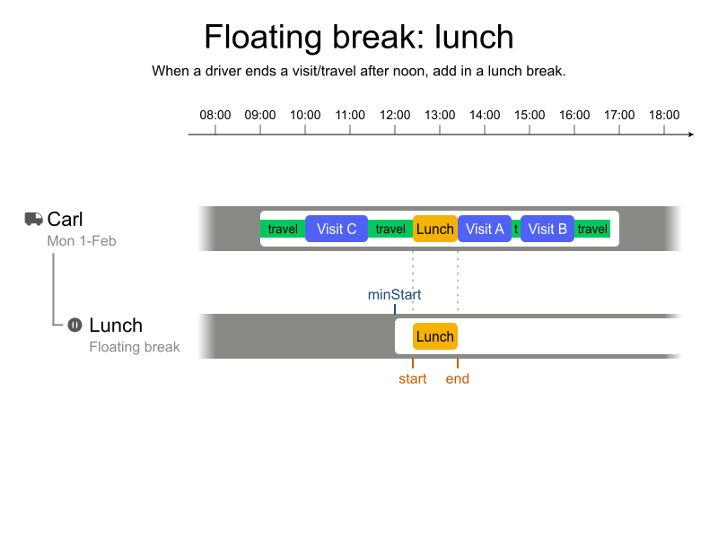
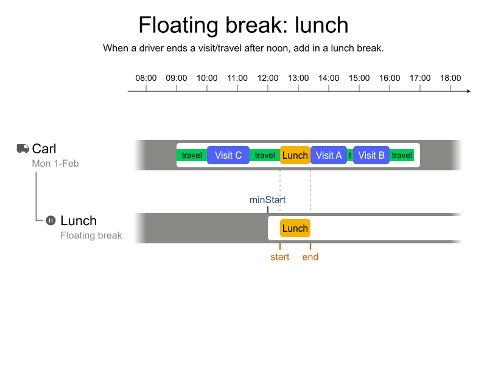
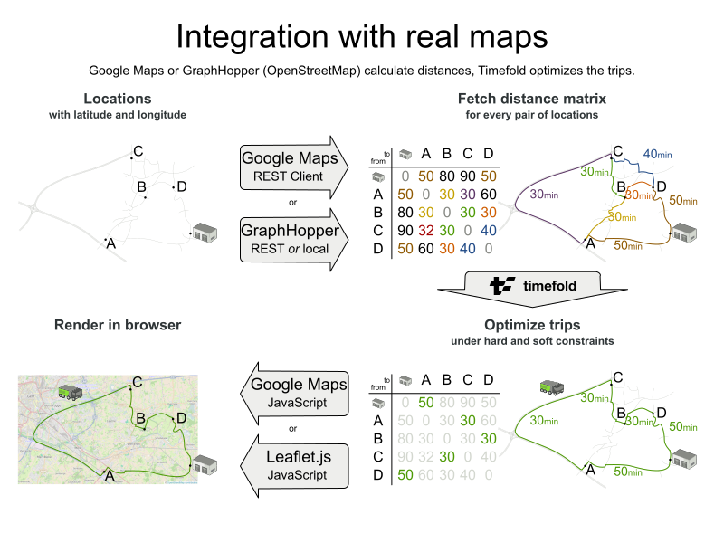
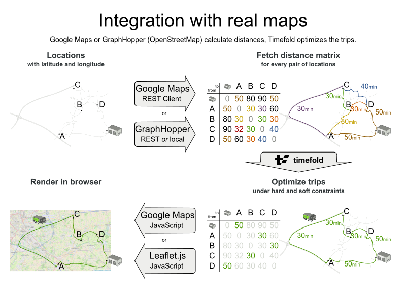
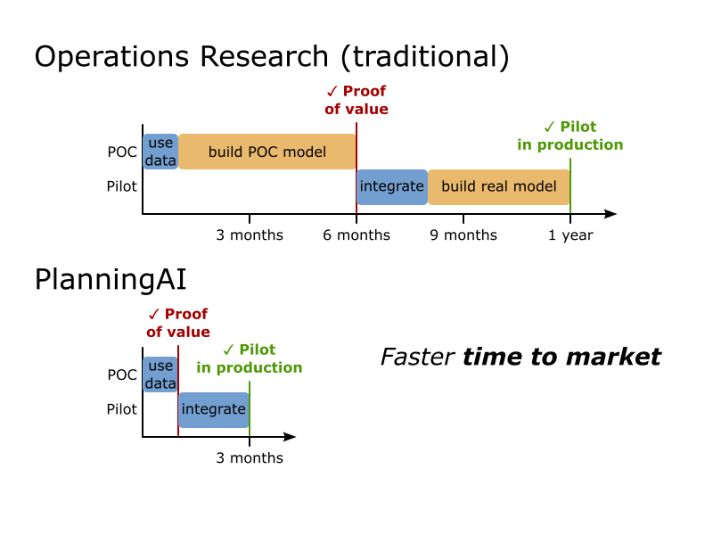
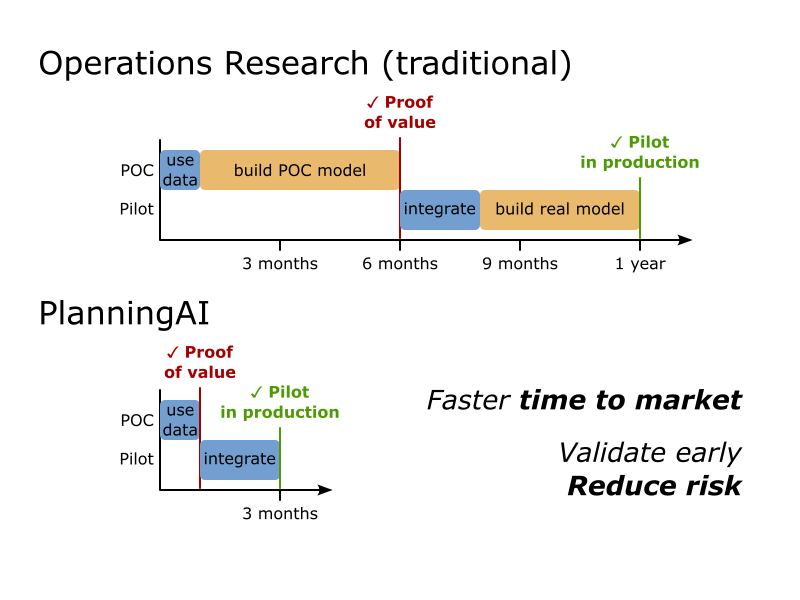
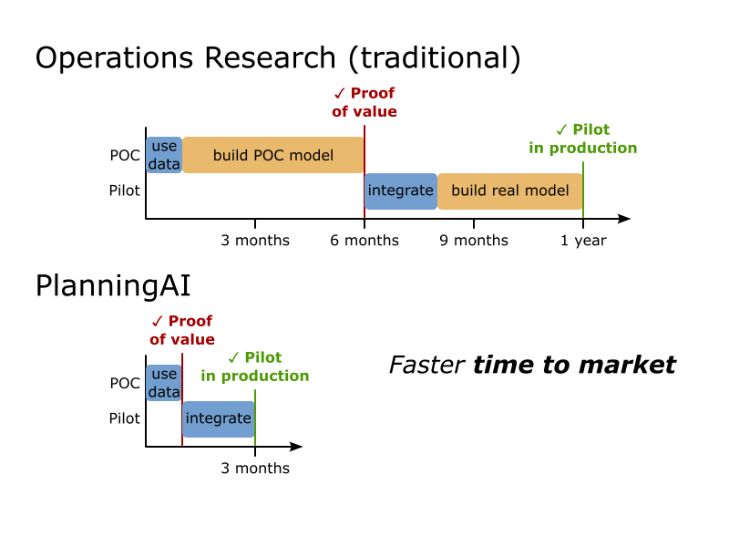
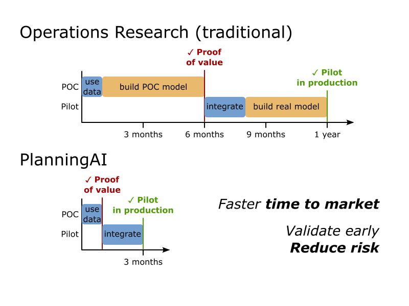

timefold.ai

 Geoffrey De Smet
Geoffrey De Smet
Complex
scheduling and routing optimization
made easy
by Geoffrey De Smet
Why are so many OR problems left unsolved?
What does this do? -COMPEX MATH-
Solved with:
- LP
- MIP
- CP
- Simplex
These sound like a magical incantation 🪄
Free the world of wasteful scheduling
How do we get there?
- Teach about OR: Academy (video, blogs, etc)
- Provide Easy to use OR Solutions:
- Solver
- Pre-Made Models
From Operations Research to "GOOD NAME HERE" Operations
Typical OR problem: TSP
- TSP (Traveling Salesman Problem)
- VRP (Vehicle Routing Problem): multi-vehicle
- CVRP (Capacitated VRP): capacity limits
- CVRPTW (CVRP with Time Windows): Adding time constraints to deliveries.
Business Problems: FSR
-
// HERE WE SHOW WE MASTER FSR, even show the link to some video.
Show more constraints.
Academical 🏎️ vs Business solutions 🚙
Timefold Solver
- Library of optimization algorithms
- AI, not ML
- Open Source (Apache license)
- Actively developed by our Open Core company
🖊 Model domain
⚖️ Define constraints
🚀 Run!
DEMO
Timefold Platform and Models
The reality is:
Not everyone can model
Not everyone has time
To complete our mission, we need to offer an alternative way to remove wasteful scheduling
Ready to Optimize!
🖊 Model domain
⚖️ Define tune constraints
🚀 Run!
DEMO
Free the world of wasteful scheduling
Our "How"?:
- Teach about OR: Academy (video, blogs, etc)
- Provide Easy to use OR Solutions:
- Solver
- Pre-Made Models
Free the world of wasteful scheduling
Timefold Solver
Open source
Software engineers
spend 10x more time
reading production code
than writing it.
Code should be
easy to read

OR code (traditional)
pythonfor i in range(num_employees):
for j in range(num_shifts):
for k in range(j + 1, num_shifts):
(model.Add(s[i][j] + d[j] + r[i] <= s[i][k])
.OnlyEnforceIf([x[i][j], x[i][k]]))
javafor (int i = 0; i < numEmployees; i++) {
for (int j = 0; j < numShifts; j++) {
for (int k = j + 1; k < numShifts; k++) {
model.addConstraint(
LinearExpr.sum(new IntVar[]{s[i][j], d[j], r[i]})
.leq(s[i][k])
).onlyEnforceIf(new IntVar[]{x[i][j], x[i][k]});
}
}
}
Timefold Solver code
python(f.for_each(Shift)
.join(Shift, equal(lambda shift: shift.employee.id),
less_than_or_equal(lambda shift1: shift1.end,
lambda shift2: shift2.start))
.filter(lambda shift1, shift2:
((shift2.start - shift1.end)
< shift1.employee.rest_duration))
.penalize(ONE_HARD)
.as_constraint("Enough rest between shifts"))
javaf.forEach(Shift.class)
.join(Shift.class, equal(Shift::employee),
lessThanOrEqual(Shift::end, Shift::start))
.filter((shift1, shift2) ->
Duration.between(shift1.end, shift2.start)
.compareTo(shift1.employee.restDuration) < 0)
.penalize(ONE_HARD)
.asConstraint("Enough rest between shifts");
How many constraints?
A scaling problem
A real-word dataset (traditional)
- 10k employees
- 50k shifts
pythonfor i in range(num_employees): # 10k loop
for j in range(num_shifts): # 50k loops
for k in range(j + 1, num_shifts): # 25k loops
model.Add(...).OnlyEnforceIf(...)
2 500 000 000 000 CPU loops
2 500 000 000 000 constraints
in memory
Out of memory error
A real-word dataset (Timefold)
- 10k employees
- 50k shifts
python(f.for_each(Shift) # 50k
.join(Shift, equal(shift.employee), ...) # ~250k tuples
.filter(...) # 0-10 tuples
.penalize(...)
.as_constraint("Enough rest between shifts"))
1 constraint
Only 250k tuples
in memory
Lazy, incremental and indexed
Incremental calculation
Why not plain python/java code?
If it isn't tested,
it doesn't work.
If it isn't tested,
it doesn't work.
If it isn't documented,
it isn't used.
DEMO
docs.timefold.ai
Field Service Routing
REST API
DEMO
app.timefold.ai
30+ constraints
Much more than VRP with Time Windows
One example...
 

Maps integration
 

Real-time planning
Employee
Shift Scheduling
REST API
We call it ...
PlanningAI
 



Q & A
| Learn more | timefold.ai |
|---|---|
| Documentation | docs.timefold.ai |
| Quickstarts | github.com/TimefoldAI/timefold-quickstarts |
| Platform | app.timefold.ai |
| Feedback |
|